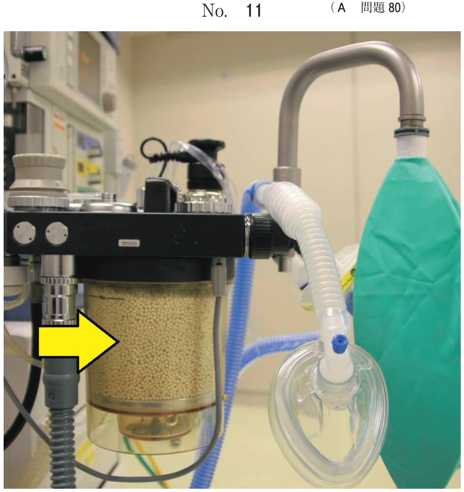
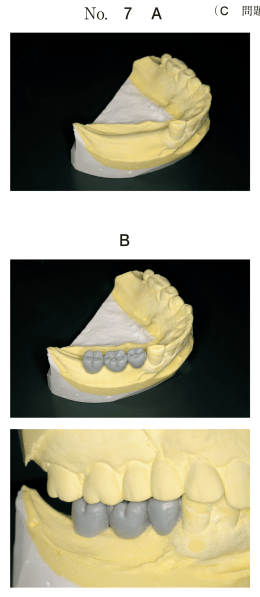
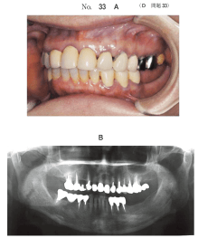
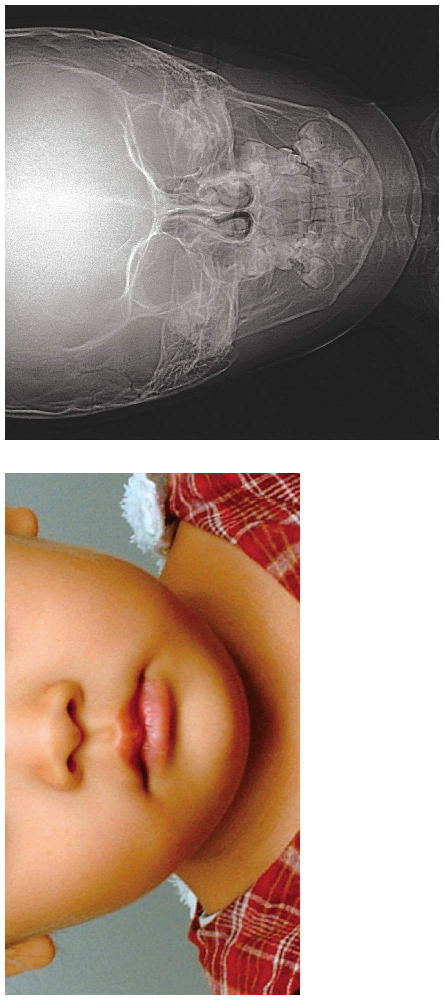

インプラント治療では、補綴主導型治療計画（トップダウントリートメント）に基づき、最終上部構造の形態から逆算して埋入位置を決定する。
補綴主導型治療計画の中核となる診断ツールである。
診断用ワックスアップ → 診断用ステント → サージカルガイドプレート
| 項目 | 内容 |
|---|---|
| 開口量 | 器具挿入のためのスペース（特に下顎臼歯部で重要） |
| クリアランス | 対合歯との距離（補綴空隙）、上部構造の設計に影響 |
| 咬合平面 | 傾斜があると埋入方向の決定が困難 |
| 隣在歯・対合歯 | ブリッジの状態、傾斜歯の有無 |
| 骨量・骨質 | CT検査で三次元的に評価 |
| 解剖学的構造 | 下顎管、上顎洞、オトガイ孔などとの距離 |
インプラント治療過程の写真（別冊No.15）を別に示す。
本装置製作の直前に行ったのはどれか。1つ選べ。

【解説】写真は診断用ステント（サージカルガイド）である。診断用ステントは診断用ワックスアップを行った後に、その形態を透明レジンに置換して製作する。CT検査は診断用ステント装着下で行うため、製作の直前ではない。
下顎右側臼歯部欠損に対するインプラント治療の術前診断を行っている。研究用模型の写真（別冊No.7A）と、ある操作後の写真（別冊No.7B）とを別に示す。
この操作の目的はどれか。1つ選べ。

【解説】研究用模型上に人工歯を配列している写真である。これは診断用ワックスアップであり、この操作の目的は診断用ステントの作製である。ワックスアップにより最終上部構造の形態を想定し、その情報を基に診断用ステントを製作する。
40歳の女性。下顎左側臼歯部のインプラント治療を希望して来院した。初診時の口腔内写真（別冊No.33A）とエックス線写真（別冊No.33B）とを別に示す。
インプラント治療の計画にあたり考慮すべきなのはどれか。2つ選べ。

【解説】下顎臼歯部のインプラント治療では開口量（器具挿入スペース）が重要な考慮事項となる。また、対合歯の状態（上顎左側臼歯部ブリッジ）は咬合関係に影響するため考慮が必要。頰棚や頰小帯は義歯の設計に関連し、下顎孔は下顎枝に位置するためインプラント埋入部位とは離れている。
58歳の女性。下顎右側遊離端欠損による咀嚼障害を主訴として来院した。インプラント治療を行うこととした。CTで計測すると欠損部の歯槽骨上縁から下顎管上縁までの距離は16mmであった。診断用模型を咬合器に装着した頬舌面観の写真（別冊No.15）を別に示す。
治療に際して問題となるのはどれか。2つ選べ。

【解説】写真から咬合平面の傾斜とデンチャースペース（補綴空隙）の不足が読み取れる。下顎管までの距離が16mmあればインプラント長は問題ない（通常10mm程度で十分）。頬舌的対向関係や歯冠・インプラント比は写真からは問題なさそうである。